No "AI" was used to "research" or create this presentation. I typed this presentation into a text editor.
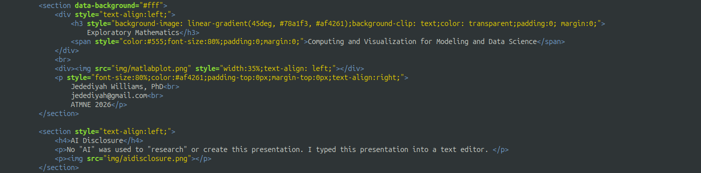
How to navigate these slides
Use ← → arrow keys to move left right
and ↑ ↓ UP-DOWN to explore
You'll find additional information (me ranting) in the vertical direction.
You can also use [ESC] to view multiple slides or the [s] key to see speaker notes.
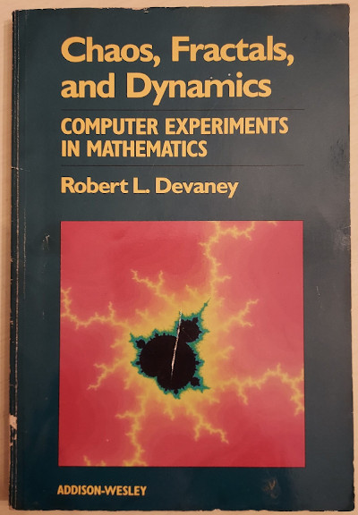
"There are a number of reasons why I have written this book. By far the most important is my conviction that
we in mathematics education —
whether on the secondary or collegiate level — fail miserably to communicate the vitality of contemporary
mathematics to our students. Let's face it: most high school and college mathematics
courses emphasize centuries-old mathematics. As a consequence, many students think that new
mathematics ended in the time of Euclid and Pythagoras (or, if they know calculus, in the time
of Newton and Leibniz). Many students feel that mathematics is a dead discipline, that, as a
career, it leads nowhere but to teaching (and thereby the perpetuation of a dead discipline).
They have no appreciation or
understanding of what a mathematician really does or thinks about."
Robert L. Devaney (1990, p. iii)
"
A very simple six- or seven-line BASIC program allows a student to compute hundreds and thousands of iterations of a single function.
Students get the feeling that they have the power to explore the uncharted wilderness
of the dynamics of quadratic functions, not to mention the many, many other simple functions whose dynamics are less well understood.
This is a radical new development in mathematics instruction.
It gives mathematics an experimental component, a laboratory.
Much as the physicists, chemists, and biologists have long used the laboratory as an essential component
of their introductory courses, now we in mathematics have the same opportunity, and the results
should be a much higher appreciation for and recognition of the importance of research mathematics by
contemporary students."
Robert L. Devaney (1990, p. iii)
Chaos Theory and fractals were everywhere in the 90s. It was great. Look at the cover of Principles and Standards!
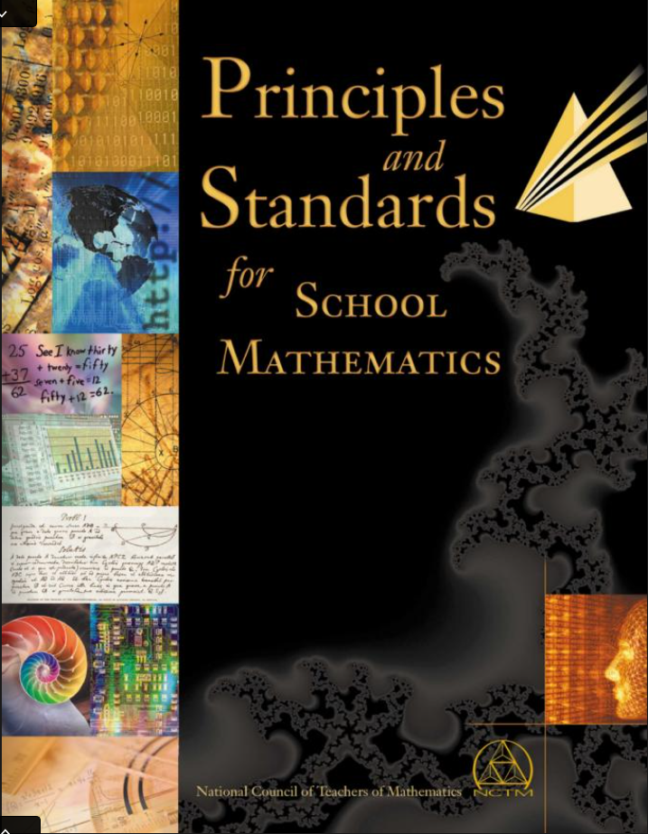
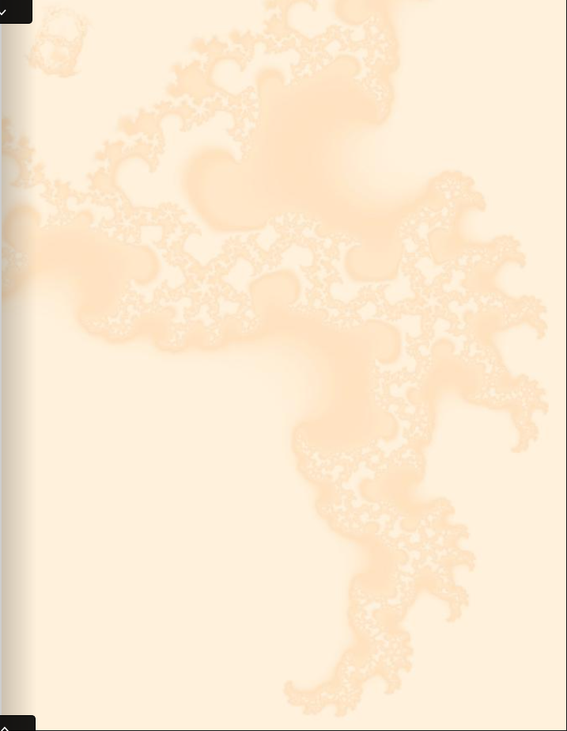
This is page 1 of Principles and Standards!
There was a very cool set of texts from 1992 on Fractals For the Classroom. There was even a set of workbooks produced, coauthored by Devaney.
So much of mathematics can and should be done on paper and whiteboards.
Given the importance of computing in mathematics and its applications, the level to which we incorporate authentic numerical computing into K-12 mathematics should not be zero.
"a majority of those who make extensive use of mathematics do so by means of a computer.
Debates over whether the computer influences the essence of mathematics would not be difficult to locate, but
there is no debating that the use of mathematics, now and in the future, is directly related to computer technology".
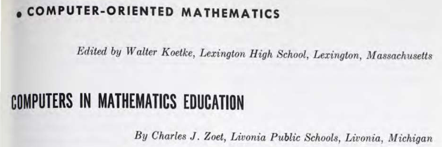
"a majority of those who make extensive use of mathematics do so by means of a
computer. Debates over whether the computer influences the essence of mathematics would not be difficult to locate, but
there is no debating that the use of mathematics, now and in the future, is
directly related to computer technology".
(1969)
Discrete, Stats, and Computing have been proposed for decades
2000 - Principles and Standards for School Mathematics
Still emphasizing computing with language similar to 1989, but shifting somehow in the view of computing away from "computing" toward "using software". Discrete math should be integral (p. 31).
2010 - CCSS. Interprets "computer" in math as a calculator or CAS system.
I suspect the reason computing fizzled is related in part to the reason that discrete mathematics content fizzled...
"A major obstacle to students' going beyond the basics is that their teachers often have never gone beyond the basics. "
"They use workesheets to provide lots of practice for their students, thinking that they are engaging their students in problem solving, but not realizing that there is a difference between a problem and an exercise."
DeBellis and Rosenstein (2004), Discrete mathematics in primary and secondary schools in the United States
In 29 of those, it appears after "Students are not expected to"
or as something to be avoided
The disconnect
Math that won't touch computing
Comp Sci that won't touch math
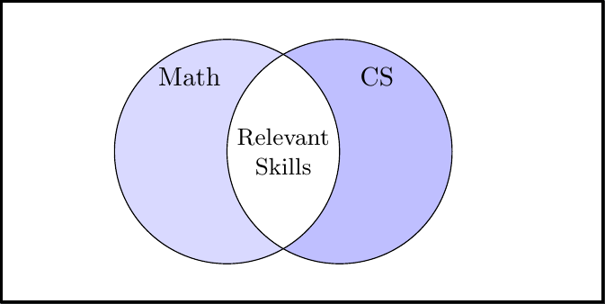
That anyone would be opposed to computing in mathematics on the grounds that it is outside the domain of pure mathematics is frustrating for many reasons, not the least of which is that our high school math curriculum is not of pure mathematics. Mandelbrot, Devaney, and others layed down the fundamental arguments for how computing is already being used in pure mathematics. Additionally, there are any number of mathematical topics we do not cover in "the traditional algebra-geometry-precalculus-calculus sequence, a sequence designed with engineering and physical science applications in mind" (NCTM 1989, p. 7).
"For the purist who would cavalierly relegate such programs to the engineer's domain, recent developments in artificial intelligence provide an undeniably potent counterexample."
"For the purist who would cavalierly relegate such programs to the engineer's domain, recent developments in artificial intelligence provide an undeniably potent counterexample."
Fey & Heid (NCTM, 1984, p. 22)
Experimental mathematics is an empirical approach to mathematics that involves numerical investigations
and often leverages computing to discover and explore patterns.
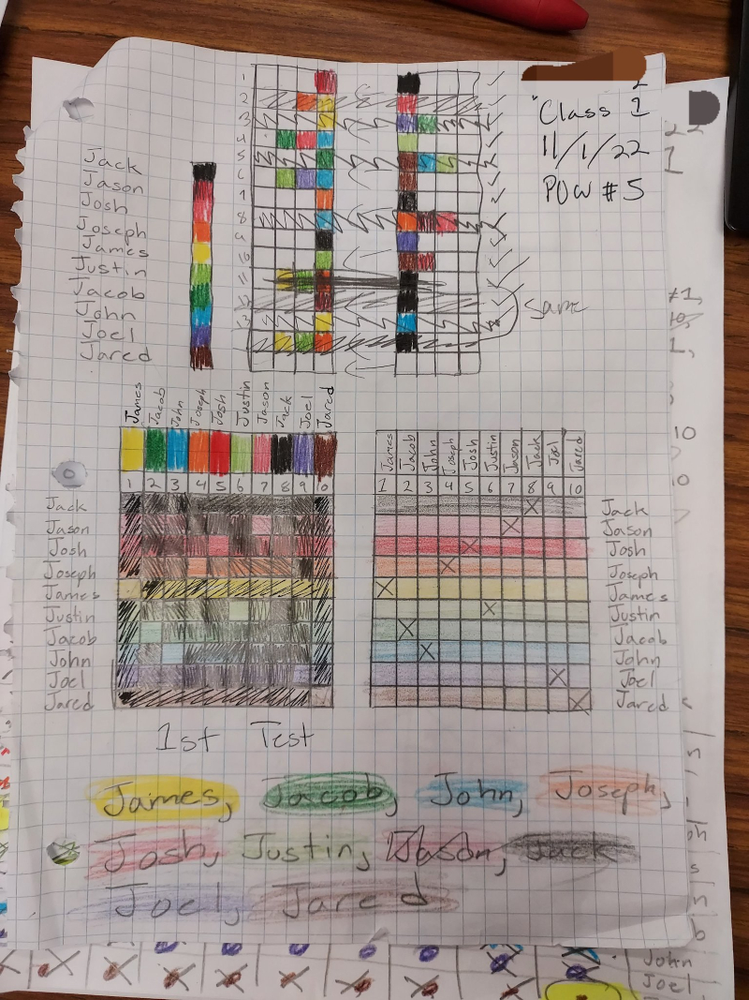
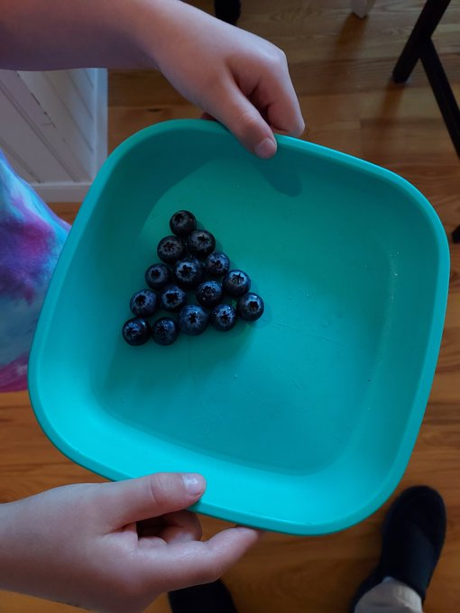
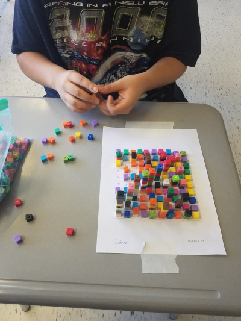
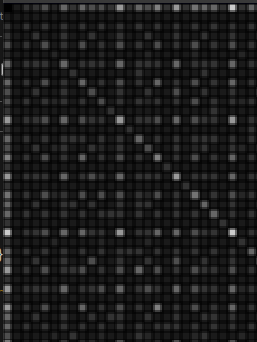
Borwein and Jungic (2025) describe experimental mathematics in education
as:
"a student-centred, instructor-moderated, (usually) computationally-assisted approach in teaching and
learning mathematics that utilizes modern technology [...]"
"We must begin by noting that experimental mathematics does not imply an attempted invasion of pure
mathematics by the applied. Applied mathematics has always been permeated with science, hence with
experiment. This feature greatly contributed to its being thoroughly unpopular with those believing
that applied mathematics is bad matematics. But experimental mathematics means something
different: it means injecting experiment back into core parts of mathematics that
need not —
at least at present — have any contact with science."
Benoit Mandelbrot (Peitgen et al., 1992, p. 2)
"In other words, we may well be witnessing the re-emergence of a new active 'doublet' of an experimental
and/or theoretical study. Experimental and theoretical physicists seldom live in perfect harmony, but they
know they must not only coexist, but actually listen to each other and otherwise interact."
"[Experimental mathematics is] not as well respected as it should be... I do feel like in the future we're
going to have much more balance between theory and experiment. Closer to how it is in the other sciences."
"In many topics of high school mathematics, computers and calculators can be used to discover and test
principles and methods. For example, concepts and theorems can be illustrated numerically and graphically to
develop sound understanding before formal proof is attempted."
The Impact of Computing Technology on School Mathematics, NCTM
(1984)
"Mathematical work does not proceed along the narrow logical path of truth to truth to truth, but bravely or
gropingly follows deviations through the surrounding marshland of propositions which are neither simply and
wholly true nor simply and wholly false."
Seymor Papert (1980, p.195)
"For students, the greatest promise and challenge of technology in mathematics learning is the move toward
more self-directed and self-monitored learning. Students must become adept at using computer-based
instructional materials, mathematical tool software, and personal programming skills to develop and practice
the use of mathematical concepts, principles, and problem-solving processes."
The Impact of Computing Technology on School Mathematics, NCTM
(1984)
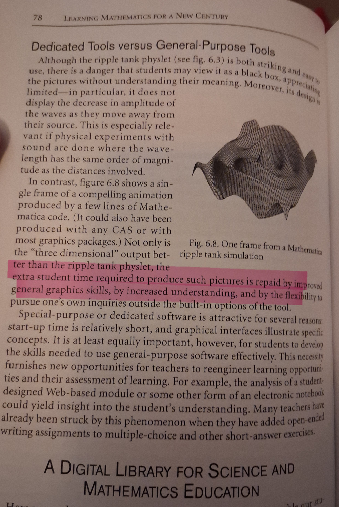
"[...] the extra student time required to produce such pictures is repaid by improved general graphics skills, by increased understanding, and by the flexibility to puruse one's own inquiries outside the built-in options of the tool"
Burke and Curcio, Learning Mathematics for a New Century, NCTM Yearbook (2000, p.78)
Broken Stick Problem
Given a stick broken at two random places, what is the probability that the three pieces can form a triangle?
The shortest that the middle piece can be is around 0
The longest that the middle piece can be is around 1/2
The longest piece has to be shorter than 1/2 for a triangle
The longest piece is shorter than 1/2 around 1/4 of the time
Some facts
A lot of mathematics has nothing to do with computers.
A lot of mathematics is only accesible with computers.
Monte Carlo Simulations
import matplotlib.pyplot as plt
import numpy as np
lengths = []
for i in range(1_000_000):
break_1 = np.random.rand()
break_2 = np.random.rand()
left = min(break_1, break_2)
right = max(break_1, break_2)
L1, L2, L3 = left, right-left, 1.0-right
shortest = min(L1, L2, L3)
longest = max(L1, L2, L3)
medium = 1.0 - shortest - longest
lengths.append([shortest, medium, longest])
lengths = np.array(lengths)
plt.hist(lengths[:,0], alpha=0.6, bins=100, density=True)
plt.hist(lengths[:,1], alpha=0.6, bins=100, density=True)
plt.hist(lengths[:,2], alpha=0.6, bins=100, density=True)
plt.show()
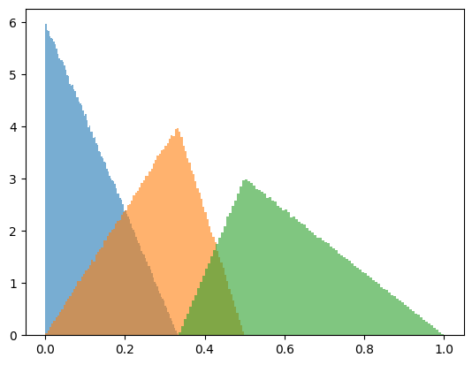
Given a stick broken at 5 places, what is the probability that the remaining 6 pieces can form a tetrahedron?
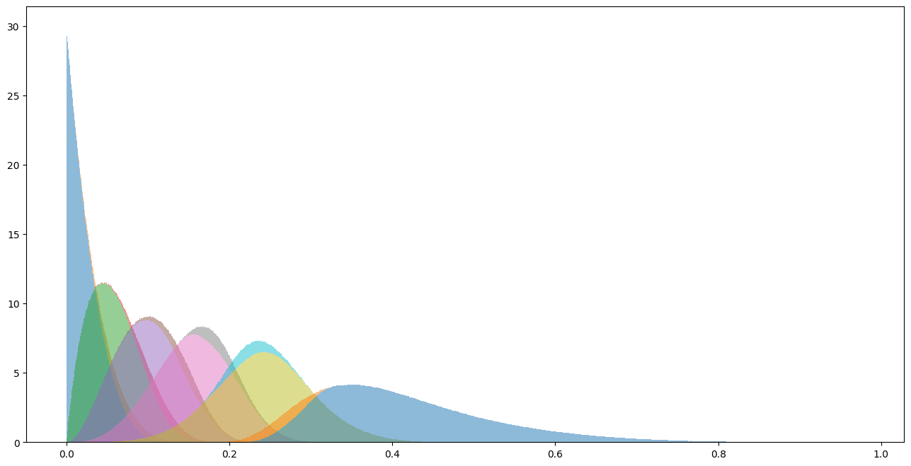
Break a stick randomly into six pieces. If we order the lengths from shortest to longest, a through f, then the PDF for each length a through f is:
\[ f_a(x) = 38880 x^4 -25920 x^3 + 6480 x^2 -720 x + 30 \quad 0 \leq x \leq \frac{1}{6} \]
\[ f_b(x) =
\begin{cases}
-100650x^4 + 54600x^3 - 9900x^2 + 600x & 0 \leq x \leq \frac{1}{6} \\
93750x^4 - 75000x^3+22500x^2-3000x+150 & \frac{1}{6} \lt x \leq \frac{1}{5} \\
\end{cases}
\]
\[ f_c(x) =
\begin{cases}
90600x^4 -36000x^3 +3600 x^2 & 0 \leq x \leq \frac{1}{6} \\
-298200x^4 + 223200x^3 -61200x^2 +7200x -300 & \frac{1}{6} \lt x \leq \frac{1}{5} \\
76800x^4 -76800x^3+28800x^2-4800x+300 & \frac{1}{5} \lt x \leq \frac{1}{4} \\
\end{cases}
\]
\[ f_d(x) =
\begin{cases}
-32400x^4 + 7200x^3 & 0 \leq x \leq \frac{1}{6} \\
356400x^{4}-252000x^{3}+64800x^{2}-7200x+300 & \frac{1}{6} \lt x \leq \frac{1}{5} \\
-206100x^{4}+198000x^{3}-70200x^{2}+10800x-600 & \frac{1}{5} \lt x \leq \frac{1}{4} \\
24300x^4-32400x^3+16200x^2-3600x+300 & \frac{1}{4} \lt x \leq \frac{1}{3} \\
\end{cases}
\]
\[ f_e(x) =
\begin{cases}
3600x^4 & 0 \leq x \leq \frac{1}{6} \\
-190800x^{4}+129600x^{3}-32400x^{2}+3600x-150 & \frac{1}{6} \lt x \leq \frac{1}{5} \\
184200x^{4}-170400x^{3}+57600x^{2}-8400x+450 & \frac{1}{4} \lt x \leq \frac{1}{5} \\
-46200x^{4}+60000x^{3}-28800x^{2}+6000x-450 & \frac{1}{3} \lt x \leq \frac{1}{4} \\
2400x^4-4800x^3+3600x^2-1200x+150 & \frac{1}{2} \lt x \leq 1 \\
\end{cases}
\]
\[ f_f(x) =
\begin{cases}
38880x^4-25920x^3+6480x^2-720x+30 & \frac{1}{6} \leq x \leq \frac{1}{5} \\
-54870x^{4}+49080x^{3}-16020x^{2}+2280x-120 & \frac{1}{5} \lt x \leq \frac{1}{4} \\
21930x^{4}-27720x^{3}+12780x^{2}-2520x+180 & \frac{1}{4} \lt x \leq \frac{1}{3} \\
-2370x^4 + 4680 x^3 -3420 x^2 +1080x -120 & \frac{1}{3} \lt x \leq \frac{1}{2} \\
30x^4 -120 x^3 + 180 x^2 -120 x + 30 & \frac{1}{2} \lt x \leq 1 \\
\end{cases}
\]
Take a look at the PDF for the longest piece. This is actually a stacked density histogram where the blue area corresponds to failed tetrahedra, and the orange area corresponds to succseful tetrahedra. That orange area is *the solution* to our problem.
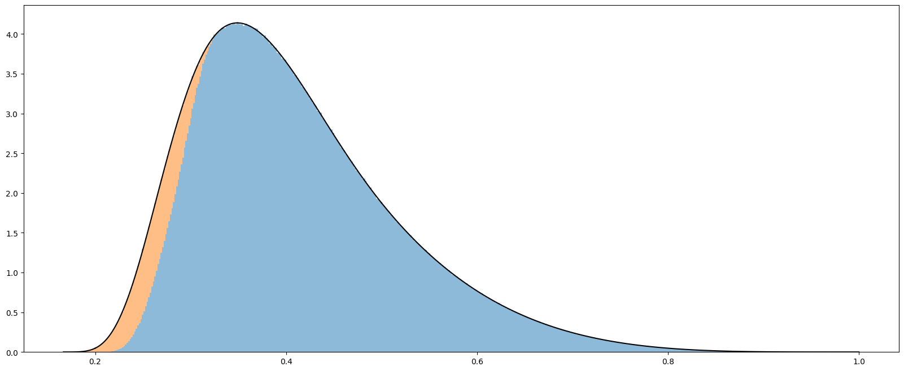
We know the exact function in black: it is \(f_{f}(x)\) on the previous slide. So if we knew the function of the orange-blue boundary, call it \(h(x)\), then we would be able to integrate \(f(x)-h(x)\) for the solution.
If you are looking for smaller sub-problems to attack, it also appears (but needs to be demonstrated) that:
A tetrahedron is always possible if \(\frac{1}{6}\le f \lt \frac{1}{5}\)
A tetrahedron is never possible if \(f \gt \frac{1}{3}\)
Find the orbit of \(x_0=0.2\) in the following systems:
\(S(x)=\sin(x)\)
\(C(x)=\cos(x)\)
\(F(x)=4x(1-x)\)
0.2
0.2
0.2
0.1986693
0.9800665
0.64
\(\vdots\)
\(\vdots\)
\(\vdots\)
Experiment — Calculator Dynamics and Feedback
Chaos
A system is chaotic if it exhibits sensitive dependence on initial conditions.
\(x_0 = 8 \) \(x_0 = 8.00001\)
Read "The Impossibility of Automating Ambiguity" by Abeba Birhane.
So much of the work that I do with those teaching fundamentals of modeling is to ask: "why do we think this will even work"? Birhane does a better job than I ever could of addressing misconceptions and undermining assumptions about what data modeling is fundamentally capable of. Some of y'all just need to read Jurassic Park or James Gleick. Or go back to Poincaré. Y'all quote George Box but need to actually read "Empirical Model-Building and Response Surfaces" (p. 424). You say all models are wrong but don't act like it.
Python
Python is a popular general purpose programming language.
import numpy as np
np.sqrt(2)
np.exp( -np.pi )
np.log(2)
Arithmetic
|
Variables
|
Graphing
Variables
Given masses $m_1=15 \times 10^6$ and $m_2=9.5 \times 10^7$, separated by a distance of $312$ m, find the force of gravity between the two masses,
$$F_g = G \frac{m_1 m_2}{d^2}$$
Python
m1 = 15 * 10**6
m2 = 9.5 * 10**7
G = 6.67 * 10**-11
d = 312
Fg = G * m1 * m2 / d**2
Arithmetic
|
Variables
|
Graphing
Variables
Find the roots of $$x^2+3x-2$$
Python
a = 1
b = 3
c = -2
x1 = (-b + np.sqrt(b**2 - 4*a*c))/(2*a)
x2 = (-b - np.sqrt(b**2 - 4*a*c))/(2*a)
Arithmetic
|
Variables
|
Graphing
Variables
Variables can be overwritten, which is useful for iterative numerical solutions to problems.
Python
x = 2
g = 1
g = 0.5 * (g + x/g)
g = 0.5 * (g + x/g)
g = 0.5 * (g + x/g)
Arithmetic
|
Variables
|
Graphing
import matplotlib.pyplot as plt
x = [1, 2, 3, 4, 5]
y = [4, 1, 3, 2, 6]
plt.plot(x,y)
plt.show()
import matplotlib.pyplot as plt
x = [1, 2, 3, 4, 5]
y = [4, 1, 3, 2, 6]
plt.plot(x,y)
plt.show()
Borwein, Naomi, and Veselin Jungic. 2025. A Survey of Experimental
Mathematics for Education.
Maple Transactions, ahead of print, February. https://doi.org/10.5206/mt.v5i1.22378.
Davis, Philip J., & Hersh, Reuben. 1981. The Mathematical
Experience. Houghton Mifflin Company Boston.
DeBellis, V.A., Rosenstein, J.G. Discrete mathematics in primary and secondary schools in the United States.
Zentralblatt für Didaktik der Mathematik36, 46–55 (2004). https://doi.org/10.1007/BF02655758
Devaney, Robert L. 1990. Chaos, fractals, and dynamics: computer
experiments in mathematics. Addison-Wesley Pub. Co.
Fey, James, and M. Kathleen Heid. 1984. Imperatives and Possibilities for New Curricula in Secondary School Mathematics.
NCTM Yearbook. Reston, VA: National Council of Teachers of Mathematics.
National Council of Teachers of Mathematics (NCTM). 1984.
The Impact of Computing Technology on School Mathematics. Report of an NCTM Conference. National
Council of Teachers of Mathematics. https://eric.ed.gov/?id=ED259898.
Burke, Maurice J. and Frances R. Curcio (editors). Learning Mathematics for a New Century 2000.
Reston, VA: National Council of Teachers of Mathematics.
Peitgen, Heinz-Otto, Hartmut Jürgens, and Dietmar Saupe. 1992. Fractals for
the Classroom Part One:
Introduction to Fractals and Chaos. Springer-Verlag New York, Inc.
Koetke, Walter, and Charles J. Zoet. 1969. "Computer-Oriented Mathematics: Computers in Mathematics
Education." The Mathematics Teacher (Reston VA, USA) 62 (7): 563-67. https://doi.org/10.5951/MT.62.7.0563.